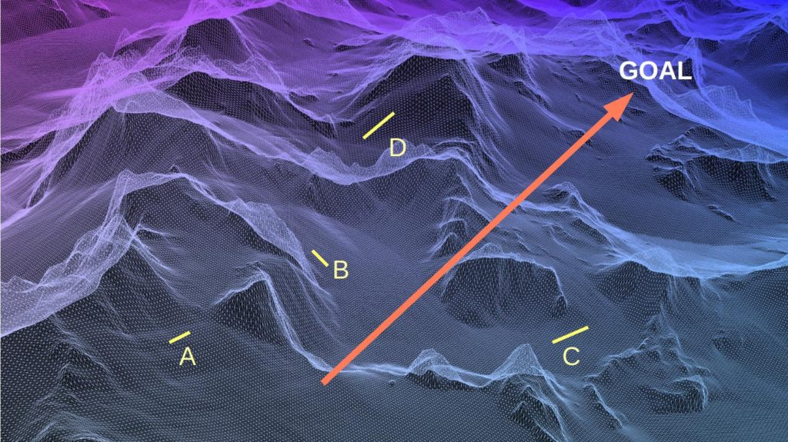

In this article we will look at different techniques, tricks and things that you can do to improve your affirmation campaigns so that they all fit together into one unified strategy. This article is one of strategy and long-term planning so that you can manifest your desires over time.
For those of you who are unaware of what this subject is all about, I would suggest visiting the Affirmation Prayer Campaign Index here…
What many people do
When most people conduct affirmation campaigns they do so “on the fly”. When they collect and acquire their affirmation statements, they do so with the knowledge of what they desire at that particular moment in their life line. Not realizing that the way to achieve long term substantive changes is through long term strategies.
That’s what I have done. And it has caused me problems “down the road” as I got older.
You need to construct a strategy that includes both your immediate short-term objectives along with a master grand plan for eventual objectives to be realized. Noting that long term strategies are the end result of years of directed thought.

The importance of a grand strategy
I strongly believe that any grand strategy much include the simplest narratives of contentment. Think in terms of you being an old person. What would you want, and then incorporate those primal elements inside of every one of your campaigns. Such as…
- I have a calm and peaceful life.
- I always eat well, and the food is delicious and healthy.
- I am in good health. There are no medical issues or problems.
- I am happy, contented, and live a full enchanted life.
- I never worry about money, taxes, bills, or encumbrances.
If you have these affirmations in your campaign, then you can guarantee that you will achieve them in your later years. After all, thirty, forty, or fifty years of directed affirmation campaigns will absolutely manifest these things.
Keep an awareness that you will change over time
Our experiences change us.
The man that I was when I was in university is not the man who I am today. That man who worked in the steel mills is not the man I am today. That man who worked in corporate America is not who I am today. My experiences changed me, and yours will change you.
Affirmation campaigns generate new experiences for you. And as they generate, they will change you. Understand and expect that.
Embrace it.
Mapping the campaigns
I have often resorted to, or utilized topographical terrain maps to illustrate the MWI. They are effective ways to see where you are going and the problems that you will encounter.
But a mind concept differs substantially from actual event experiences. So how can you peer into your future to see what “mountains” and hurtles lie ahead of you?
Well, the answer is easy.
You add phraseology to manifest that knowledge, second sight, and ability. May I suggest the following…
- I have the ability to sense the MWI “mountains” that lie on my life-path, and take immediate measures to make sure that they are avoided.
Sign posts / tell-tales
You might want to inject “sign posts”, or “tell-tales” into your affirmation campaigns to make sure that you are on the right trajectory, and not getting sidetracked on other issues. These are little “markers” or events that you will know when you see them, to reaffirm that you are on the right path.
These little “markers” differ person to person, but the one thing that they all have in common is that you would recognize them.
- They could be a sequences of numbers or letters.
- They could be a string of automobile license plates.
- They could be a kind of food, or a deja vu moment.
To incorporate these kinds of “sign posts” you need only add them into your campaign. Such as…
- Periodically, sign-posts or tell-tales are provided to me to reaffirm that I am on the correct vector path to achieve my goals dreams and objectives.
Putting it all together
In order to incorporate a grand strategy in your individual affirmation prayer campaigns, you need only add a few phrases to your campaigns. These phrases will assure that a final goal can be realized, and that sign-posts are provided to you along the way as you move ahead on that path.
You can conduct prayer affirmation campaigns as you would normally conduct them, it’s just that by adding a few extra affirmations you are now part of a much larger theme and objective. Great going you!
Recording your journey
I always try to record my life in a series of notebooks and journals.
Over time they get displaced or lost, and for the last twenty years they have been all electronics, with their destruction a matter of the collapse of hard drives and computer malfunctions. Never the less, it is always enlightening to read your entries from six months ago, one year ago, two years, ago and so on and so forth.
You can actually see how your life has changed and has adapted.
Conclusion
This was just a short article. Please everyone keep conducting your affirmation prayer campaigns and working to improve your life so that you can be the best that you can ever possibly be. I believe in you.
I hope that all of this will be beneficial to you on a very personal basis.
A final note.
To facilitate your successful implementation of your goals, intentions and prayers, it is always beneficial to be the Rufus in everything that you do. video. 130MB